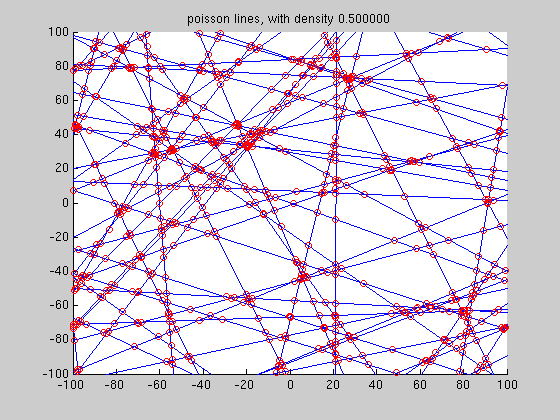

Draw Poisson lines
Draw Poisson lines, that is lines uniformly and isotropically
distributed in the plane.
---------
author : David Legland
INRA - TPV URPOI - BIA IMASTE
created the 24/06/2005
Contents
initializations
clear all;
close all;
lambdaRho = .5;
rhoMax = 150;
Nl = rhoMax*lambdaRho;
create lines
theta = 2*pi*rand(Nl, 1);
rho = rhoMax*rand(Nl, 1);
lines = createLine(rho, theta);
draw lines
clf;
axis([-100 100 -100 100]);
hold on;
drawLine(lines);
title(sprintf('poisson lines, with density %f', lambdaRho));

Also draw intersection points
pts = zeros(0, 2);
for i=1:size(lines, 1)-1
pts = [pts ; intersectLines(lines(i,:), lines(i+1:end, :))];
end
pts = pts(isfinite(pts(:,1)), :);
hold on;
drawPoint(pts, 'ro');
